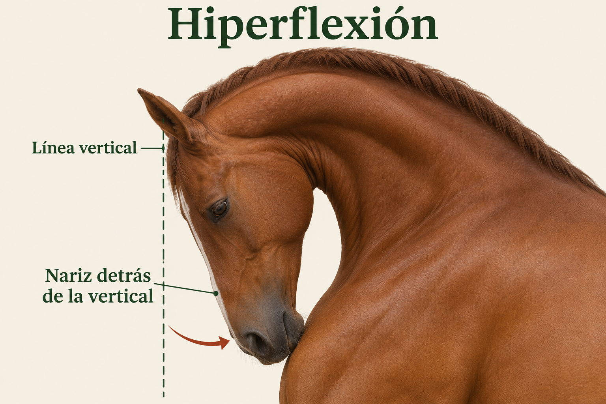

Por qué escribo de forma anónima
Escribo este artículo a título personal y he decidido mantener mi identidad en reserva para evitar que las diferencias o los conflictos de intereses entre grupos desvíen la atención del contenido. Mi único propósito al escribirlo es contribuir al bienestar equino. Quiero que los estudios y las propuestas se valoren por la evidencia y por lo que pueden aportar al cuidado de los caballos.
Una tradición que reúne al campo y a la ciudad
Para muchas familias costarricenses, el Tope Nacional es una ocasión para encontrarse, compartir el gusto por los caballos y celebrar una parte de la vida rural del país. En las calles de la ciudad se hacen visibles conocimientos y oficios relacionados con la crianza, la monta y el cuidado de los animales.
El caballo y la ganadería forman parte de la historia de distintas comunidades costarricenses. Una explicación histórica divulgada por la Universidad Nacional relaciona los topes con diversos procesos: el trabajo ganadero, las cabalgatas, las fiestas comunitarias y las celebraciones públicas. Es una tradición que ha cambiado con el tiempo y que tiene significados particulares en cada región. UNA: El tope: una tradición que fusiona trabajo, identidad y festejo.
El Día del Caballista: reconocer a quienes mantienen viva la tradición
El 26 de diciembre se asocia con el Tope Nacional y el Día del Caballista, una celebración recogida también en materiales del Instituto Costarricense de Turismo. Es una oportunidad para reconocer a las personas que crían, cuidan, montan y trabajan con caballos, y para compartir sus conocimientos con nuevas generaciones. ICT: Aventuras en tierra.
Estas actividades pueden crear espacios de encuentro entre personas de distintas comunidades y acercar al público urbano al mundo rural. También pueden ayudar a transmitir oficios, historias y formas de trabajar con los animales. Propongo aprovechar la celebración para mostrar esos saberes: explicar cómo se cuida un caballo, reconocer a quienes lo atienden y dar espacio a artesanos y productores locales.
Cómo puede contribuir al sector pecuario
El sector pecuario incluye la crianza y el cuidado de animales, entre ellos los caballos. Alrededor de la actividad ecuestre trabajan criadores, cuidadores, profesionales veterinarios y de zootecnia, herradores, productores de forraje, transportistas y fabricantes de equipo. Un tope bien organizado puede abrir oportunidades para estos servicios y productos, además del comercio y el turismo de la comunidad anfitriona.
La relación entre equinos y medios de vida tiene ejemplos documentados en Costa Rica. Un estudio sobre los caballos de carga del Parque Nacional Chirripó examinó su bienestar y su aporte a los ingresos de los arrieros. Es otra actividad, pero ayuda a entender que el cuidado de los animales y el bienestar de las familias pueden estar estrechamente relacionados. Solano-Mora et al., 2025.
Para que el tope aproveche ese potencial, propongo contratar servicios locales, ofrecer espacios a pequeños proveedores y acompañar el evento con capacitación sobre alimentación, salud y manejo. Son oportunidades que conviene medir: no cuento aquí con una estimación del empleo o los ingresos generados específicamente por el Tope Nacional.
Celebrar la cultura cuidando a los caballos
El objetivo de esta página es que el Tope Nacional se haga bien y pueda seguir siendo un espacio de encuentro y orgullo para quienes lo disfrutan. Cuidar al caballo forma parte de ese compromiso: requiere preparación, transporte seguro, agua, descanso y personas capaces de actuar cuando algo sale mal. Aquí reúno estudios y propuestas para convertir ese objetivo en decisiones concretas.
Qué muestran los estudios de Costa Rica
Mirar al caballo, además de hacer exámenes
El estudio Welfare assessment of horses ridden in the Costa Rica National Horse Parade —evaluación del bienestar de caballos montados en el Tope Nacional— incluyó observaciones de 513 caballos. En un grupo separado de 13 caballos también se midieron el peso y sustancias relacionadas con el cortisol en las heces, antes y después del evento.
Se observaron conductas como sacudir la cabeza y presentar hiperflexión del cuello. Los 13 caballos pesaron menos después del evento. Las mediciones hormonales no mostraron una diferencia estadística clara entre los dos momentos.
La idea práctica: para evaluar cómo está un caballo hay que juntar varias pistas. Un resultado hormonal sin cambios claros no demuestra, por sí solo, que todo estuvo bien. Tampoco una conducta aislada explica todo lo que le sucede. Arias Esquivel et al., 2022.
Observar durante todo el recorrido
El trabajo From Tradition to Equine Welfare: Measuring Observational Stress Indicators During Costa Rica's National Horse Parade —de la tradición al bienestar equino: medición de señales observables de estrés— describe observaciones de 557 caballos en tres puntos de un recorrido de 3,5 kilómetros.
Varias señales, como sacudir la cabeza y la hiperflexión del cuello, fueron más frecuentes en el punto final.
La idea práctica: revisar únicamente la entrada deja una parte importante del evento sin observar. Conviene tener vigilancia en varios sectores y una manera de retirar al caballo sin obligarlo a terminar el recorrido.
Es un preprint, una versión difundida antes de completar la revisión científica de una revista. Las diferencias entre estaciones no demuestran que cada caballo haya empeorado: no deben leerse como seguimiento individual de los mismos animales. Rodríguez-Segura et al., 2026.
San Pedro: aprender también de lo que pasó fuera del desfile
El tope del 26 de diciembre de 2024 se realizó en Montes de Oca. SENASA anunció coordinación con la municipalidad y la Comisión de Fiestas de San José, revisión de los caballos e inspección de las rampas de descarga. Su comunicado excluía animales enfermos o lesionados, el galope y el uso de implementos que maltrataran al caballo. Comunicado de SENASA, 20 de diciembre de 2024.
Después del evento, El Observador recogió la explicación de SENASA sobre dos caballos a los que se les practicó eutanasia: uno sufrió una fractura al caer durante la descarga y otro tras una patada de otro caballo durante el trayecto. La noticia informó de 23 atenciones profesionales; esa cifra no es una evaluación completa de todos los participantes. Reporte del 28 de diciembre de 2024.
Mi propuesta: el plan de seguridad debe empezar donde se baja el primer caballo y terminar cuando sale el último transporte. La descarga, la espera y la salida necesitan responsables, espacio y supervisión.
Lo que la ciudad obliga a resolver
En San Pedro, la información de tránsito de 2024 describió un recorrido de 5,5 kilómetros por sectores como Los Yoses, la Fuente de la Hispanidad y los alrededores de la UCR. También hubo cambios para buses que conectan con Curridabat, Tres Ríos y Cartago. Estos datos corresponden a aquella edición, no a un recorrido vigente para cualquier año. Información vial de diciembre de 2024.
Para San José o San Pedro propongo revisar cada posible ruta a pie, con personal veterinario y de tránsito. El mapa debe responder preguntas muy concretas:
- ¿Dónde se descarga sin mezclar caballos, buses y espectadores?
- ¿Dónde se forman filas y cómo se evita que se acumulen más animales?
- ¿Qué curvas, tapas, rejillas o cambios de superficie necesitan protección o un desvío?
- ¿Dónde puede salir un caballo antes de la meta y llegar su transporte?
- ¿Cómo entra una ambulancia cuando las calles están cerradas?
- ¿Dónde están el agua y el descanso, y cómo se llega sin atravesar una multitud?
Una ruta más corta puede seguir siendo problemática si obliga a esperar durante horas. Por eso propongo registrar también el tiempo de espera y el tiempo total de participación, desde la llegada hasta la salida.
Un buen descargadero también necesita una conexión segura
Contar con rampas adecuadas y permitir su uso es una ayuda valiosa. Pero la seguridad debe continuar desde el descargadero hasta la salida del desfile. Propongo que la organización, la Policía Montada y Tránsito coordinen puntos de descarga próximos al inicio o una conexión corta y con tránsito regulado desde las instalaciones disponibles. También hace falta una conexión segura desde la meta hasta la zona de carga.
Si una instalación queda lejos, hay que contar esos kilómetros adicionales y revisar las calles que recorrerán los caballos. Una rampa adecuada no resuelve por sí sola la exposición posterior al tránsito. El mapa del evento debe mostrar todo el trayecto del caballo, no únicamente el tramo que ve el público.
Cómo reconocer que un caballo necesita atención
Durante el tope, observar al caballo permite detectar cambios y actuar a tiempo. Conviene mirar cómo se mueve, qué hace con la cabeza, cómo respira y qué está pasando a su alrededor. Importa si una señal se repite, cuánto dura y si aparece junto con otras. Esa observación ayuda a decidir cuándo dar espacio, reducir la exigencia o pedir una revisión.
Sacudidas de cabeza e hiperflexión
La hiperflexión es una postura en la que el cuello se flexiona y el perfil de la cara queda detrás de la vertical: vista de lado, la nariz se recoge hacia el pecho. No es simplemente bajar la cabeza. Observar esta postura o sacudidas repetidas de cabeza es motivo para revisar el manejo y el equipo. Durante una revisión, importa observar el contacto de las riendas y si se está obligando al caballo a mantener una postura mediante presión continua. ISES recomienda evitar posturas forzadas y señales constantes con las riendas, las piernas o las espuelas. Principios de ISES.
Propongo reducir la exigencia y pedir una revisión cuando estas señales se repitan. Si hace falta detenerse, debe facilitarse una salida segura del flujo del desfile.

Sudor y recuperación del esfuerzo
El sudor ayuda al caballo a enfriarse. Para interpretarlo hay que considerar el esfuerzo, el calor, la humedad y cómo se recupera. En ambientes húmedos, el sudor se evapora con más dificultad, de modo que sudar no garantiza que el caballo esté perdiendo suficiente calor.
La respiración muy trabajosa, el decaimiento o la falta de coordinación requieren atención veterinaria inmediata. El agua, la sombra y el espacio para enfriamiento deben estar disponibles durante la jornada. Universidad de Minnesota: cuidado de caballos en calor.
Cojeras, lesiones o caídas: actuar en el momento
Ante una cojera evidente, una lesión o una caída, se debe avisar al personal veterinario sin esperar a la meta. Hay que dejar espacio para que evalúe al caballo y decida cómo atenderlo o retirarlo. El comunicado de SENASA para 2024 contemplaba el retiro de animales con lesiones o cojeras evidentes a criterio profesional. SENASA.
Qué se puede aprender de otras fiestas ecuestres
En Maó, Menorca, un estudio siguió el cortisol en saliva de caballos participantes en dos ediciones de una fiesta tradicional. Encontró aumentos durante la actividad y recuperación de los valores hacia el nivel de referencia al día siguiente. También describió descansos con sombra y agua disponible.
La enseñanza útil es que se puede estudiar una tradición durante sus distintas etapas y organizar pausas dentro del evento. Los resultados de Menorca no demuestran que un tope costarricense sea seguro: son lugares, actividades y condiciones diferentes. Olvera-Maneu et al., 2023.
Sartiglia, Italia: llegar sano y recuperarse bien
En la celebración tradicional de Sartiglia, un estudio evaluó a 21 caballos el día anterior, durante el torneo y al día siguiente. Encontró deshidratación y aumentos de cortisol y otros valores durante la actividad. Muchos valores regresaron a sus niveles iniciales al día siguiente.
Cómo aplicarlo al tope: revisar al caballo antes de entrar es importante, pero también hay que observar cómo termina y cómo se recupera. La hidratación y el cuidado después de participar deben formar parte del plan. Sartiglia incluye galope y tiene exigencias diferentes a las del tope; sus resultados no permiten calcular cuánto riesgo tendrá un caballo en San José. Pazzola et al., 2015.
Concursos tradicionales en España: reconocer lo que está bien y corregir problemas
Un estudio de concursos de tiro y arrastre en España evaluó a 160 caballos combinando observaciones de comportamiento y salud. Los autores describieron un estado general favorable, pero también identificaron aspectos por mejorar, como cascos demasiado largos y lesiones relacionadas con los arneses.
Cómo aplicarlo al tope: evaluar una tradición permite reconocer condiciones favorables y encontrar problemas concretos que se pueden corregir. Para el tope, propongo revisar cascos, lesiones y ajuste del equipo, además del comportamiento. Estos concursos tienen esfuerzos breves y distintos a un desfile urbano; sus resultados no demuestran cómo están los caballos del tope. Alonso-de-la-Varga y Lomillos Pérez, 2026.
Otros estudios que ayudan a organizar el cuidado
Calor: tener cómo enfriar al caballo
Un experimento con cinco caballos comparó cinco formas de enfriamiento después de ejercicio intenso en un ambiente caliente y húmedo. La aplicación continua de agua mediante mangueras redujo la temperatura corporal más rápidamente que las otras opciones comparadas.
Cómo aplicarlo al tope: además del agua para beber, propongo disponer de agua, equipo y un espacio para enfriamiento, con personal capacitado. Es un estudio pequeño y de ejercicio intenso: no establece tiempos de recuperación ni temperaturas de retiro para el tope. Takahashi et al., 2020.
Transporte: el cuidado empieza antes de la salida
Una encuesta australiana con 787 participantes estudió prácticas de transporte y problemas de salud reportados por quienes cuidaban caballos. Encontró asociaciones entre algunas prácticas y problemas como lesiones y enfermedad por calor.
Cómo aplicarlo al tope: incluir preparación, carga, viaje y recuperación dentro de la organización del evento. Las respuestas de una encuesta no prueban qué causó cada problema. Además, entre las variables examinadas, este trabajo no identificó factores asociados con los cólicos reportados. Padalino et al., 2016.
Cólicos: cuidar la rutina y vigilar después del viaje
Un estudio que comparó caballos con un tipo de cólico por obstrucción y distensión del colon frente a caballos de control encontró asociaciones con viajes en las 24 horas anteriores, cambios recientes del ejercicio y más tiempo en establo, entre otros factores.
Cómo aplicarlo al tope: planificar el viaje y las esperas para reducir cambios innecesarios de rutina, y mantener vigilancia al regresar. El resultado es una asociación, no significa que viajar produzca inevitablemente cólico ni que todos los tipos de cólico tengan las mismas causas. Hillyer et al., 2002.
Cómo sería un Tope Nacional bien organizado
Estas son propuestas para discutir y evaluar.
Antes: preparar al caballo y preparar la ciudad
Propongo una inscripción con identificación del caballo, responsable y transporte; revisión de los requisitos sanitarios de la edición; y un control de ingreso con criterios veterinarios escritos. La organización debe comunicar esos criterios antes del viaje, para evitar que un animal no apto llegue hasta la fila de salida.
La preparación debe ser gradual. Exponer a un caballo de golpe a ruido y multitudes no equivale a enseñarle a manejarlos. ISES recomienda habituación progresiva y evitar dolor, miedo y señales confusas. Principios de entrenamiento de ISES.
Durante: agua y descanso que realmente se puedan usar
Propongo salidas por grupos, espacios de descanso fuera del flujo y puntos de agua con acceso controlado para evitar aglomeraciones. Cada punto necesita una persona responsable y un plan de reposición. El horario y las pausas deben decidirse según las condiciones del día y el criterio veterinario.
La base es sencilla: agua, manejo adecuado, atención de salud y protección frente a condiciones ambientales perjudiciales son necesidades del caballo, también cuando participa en una celebración. Principios de bienestar de la AAEP.
Elegir un horario con menos sol y calor
Propongo valorar un horario temprano en la mañana o al final de la tarde, evitando las horas de mayor exposición al sol. La decisión debe considerar también humedad, ventilación, pronóstico, iluminación y seguridad vial. Menos sol no garantiza por sí solo una temperatura adecuada. La recomendación de ajustar el ejercicio a las horas más frescas está recogida por la Universidad de Minnesota.
El cambio de horario debe incluir la llegada, las filas de ingreso y el viaje de regreso. Empezar más tarde sirve de poco si se cita a los caballos desde el mediodía para esperar al sol. Propongo ingresos escalonados, sombra y posibilidad de ajustar o suspender la participación cuando las condiciones comprometan el bienestar.
Una sola vuelta, en un solo sentido y sin paradas que bloqueen
Propongo que cada caballo complete el recorrido una sola vez, siguiendo el sentido señalado, sin devolverse ni volver a ingresar. Se debe avanzar de forma ordenada, al paso y dejando espacio, sin detenerse voluntariamente para conversar, posar o esperar a otros grupos en medio de la ruta. El personal de organización debe regular el ingreso cuando el tramo siguiente esté lleno; la solución no es presionar a los caballos para que avancen dentro de una aglomeración.
Las pausas para agua, descanso, revisión veterinaria o seguridad deben poder hacerse en zonas fuera del flujo, con salidas señalizadas. Avanzar de forma continua nunca debe impedir atender a un caballo ni obligarlo a seguir si necesita detenerse.
A los medios de comunicación: propongo acordar entrevistas antes de la salida o después de finalizar, preferiblemente con la persona desmontada y el caballo a cargo de alguien responsable en una zona segura. Durante el recorrido, no pedir a los jinetes que se detengan, giren, repitan una pasada o hagan maniobras para la cámara. La cobertura debe adaptarse al paso del desfile.
Manejo: reglas que puedan hacerse cumplir
Propongo personal identificado que pueda intervenir ante manejo peligroso, ordenar una pausa y contactar al equipo veterinario. Debe existir un procedimiento para relevar a una persona que no esté en condiciones de conducir al caballo con seguridad. Las reglas deben explicarse desde la inscripción y aplicarse durante todo el evento.
Universidades y voluntariado: prepararse para observar, ayudar y avisar
Propongo invitar a distintas universidades con formación y experiencia en medicina veterinaria, zootecnia y bienestar equino a participar en la preparación y supervisión del evento. Sus profesionales pueden ayudar a capacitar al voluntariado, definir qué observar y organizar equipos a lo largo de la jornada. El estudiantado también puede colaborar, con tareas acordes con su formación y bajo supervisión profesional.
La capacitación debe realizarse antes del tope e incluir una práctica con ejemplos de situaciones que podrían presentarse. Debe enseñar a reconocer señales de dificultad, mantener una distancia segura de los caballos, orientar a participantes hacia el agua y las zonas de descanso, y comunicar un incidente con claridad. También conviene practicar cómo actuar ante aglomeraciones, manejo peligroso, lesiones o problemas durante la carga y descarga.
Propongo distribuir equipos identificados en los descargaderos, las filas de ingreso, distintos sectores del recorrido, las zonas de descanso y la salida. Los profesionales de zootecnia pueden apoyar la observación del comportamiento, las condiciones de manejo y el acceso a recursos; el personal veterinario debe encargarse de la evaluación clínica y de las decisiones de atención y traslado. El voluntariado observa, orienta y comunica; no debe diagnosticar, medicar ni enfrentarse a participantes.
Observar debe llevar a una respuesta. Antes de abrir el ingreso, la organización debe acordar con SENASA y las autoridades policiales y de tránsito un canal de comunicación, responsables por sector y un procedimiento para atender los avisos. Cuando se observe algo inapropiado, el reporte debe indicar qué está ocurriendo, la ubicación, la hora y cómo identificar al caballo o participante, sin ponerse en riesgo. Una emergencia debe comunicarse de inmediato, sin esperar a completar un formulario.
Cada aviso debe llegar a una persona responsable de coordinar la respuesta y registrar qué se hizo. Las decisiones sanitarias, de seguridad o de aplicación de las reglas corresponden al personal competente y a las autoridades según sus funciones. Propongo revisar los reportes al terminar para identificar problemas repetidos y mejorar la siguiente edición.
Esta participación universitaria y del voluntariado es una propuesta de organización: requiere acuerdos previos y complementa el equipo profesional y la supervisión oficial del evento.
Emergencias: una salida real, no solo un número de teléfono
Propongo un canal de comunicación probado, vehículo apto para traslado equino, rutas de acceso despejadas y coordinación previa con el centro que recibiría una emergencia. La decisión de mover o cargar a un caballo lesionado corresponde al equipo veterinario.
Las guías de la AAEP para lesiones en hipódromos ofrecen una referencia de organización de personal, comunicación y transporte. Aquí adapto esa lógica al desfile urbano; no traslado tratamientos ni protocolos de carreras al público. Guía de manejo de lesiones de la AAEP.
Terminar el recorrido y regresar a casa
Propongo que, al finalizar, los caballos pasen directamente a recuperación y preparación para el regreso, y vuelvan a su lugar de origen en cuanto estén en condiciones de viajar. Eso incluye el tiempo necesario para descansar, enfriarse, beber agua y recibir revisión cuando corresponda. El transporte debe estar coordinado de antemano: no prolongar durante horas la permanencia del caballo en la ciudad por actividades sociales de sus acompañantes, ni dejarlo esperando dentro de un vehículo estacionado al sol.
Esta propuesta coincide con la indicación de SENASA para la edición de 2024 de regresar los equinos a su lugar de origen al terminar el tope. Comunicado de SENASA. Si un caballo necesita atención, su evaluación y destino deben decidirse con el equipo veterinario, en lugar de apresurar la carga.
Un balance para mejorar la próxima edición
Propongo publicar un balance sin datos personales: caballos ingresados, rechazados y retirados; motivos de atención; incidentes durante descarga, recorrido y salida; tiempos de espera; y funcionamiento del agua y del transporte de emergencia.
Para comparar ediciones hay que usar las mismas definiciones. “Atenciones” puede incluir varias revisiones del mismo caballo. Contar menos casos tampoco demuestra una mejora si hubo menos observadores. El informe debería explicar cómo se recogieron los datos y qué cambios se harán para la próxima edición.
Cuidado digestivo antes, durante y después del tope
El cólico es dolor en el abdomen y puede tener distintas causas. No todos los casos se pueden evitar, pero mantener agua, alimentación y rutinas adecuadas ayuda a reducir riesgos. Esta guía es de prevención; ante signos de dolor, lo importante es pedir atención veterinaria.
Antes de salir
- Mantener el alimento y el forraje habituales; evitar cambios bruscos de dieta o grandes raciones de concentrado “para darle energía”.
- Planificar horarios de alimentación y agua para que el viaje y la espera no se conviertan en largas interrupciones de la rutina. Llevar forraje conocido, agua y recipientes limpios.
- Revisar con el veterinario los antecedentes de cólico y las necesidades particulares del caballo, además de su cuidado dental y control de parásitos habitual.
Estas medidas se apoyan en recomendaciones de prevención de la Universidad Estatal de Colorado.
Durante el viaje y el evento
- Ofrecer agua limpia con frecuencia, sin esperar a que el caballo acumule mucha sed. Aunque beba pequeñas cantidades en cada oportunidad, seguir ofreciéndola y permitirle beber lo que necesite. La Universidad de Minnesota recomienda mantener el acceso al agua también durante el ejercicio.
- Organizar oportunidades de alimentación con el forraje habitual en las áreas de espera y descanso, evitando cambios de alimento y periodos prolongados sin comer. No colocar el alimento directamente sobre suelo sucio o con arena.
- Vigilar si come, bebe y defeca de forma habitual. Anotar cambios y comunicarlos al personal veterinario; los viajes y los cambios de manejo pueden alterar el funcionamiento intestinal. UC Davis: Colic: A Pain in the Gut.
Al regresar
- Retomar la rutina habitual y ofrecer agua y forraje; no compensar la jornada con una gran ración de concentrado.
- Seguir observando el apetito, el consumo de agua, las heces y el comportamiento durante esa noche y el día siguiente. Dejar a una persona responsable de comprobar cómo está el caballo, incluso si sus acompañantes continúan celebrando.
- Si hubo una atención veterinaria, seguir las indicaciones específicas para ese caballo.
Mantener rutinas y evitar cambios bruscos son recomendaciones de UC Davis; la vigilancia al regresar es mi propuesta de organización para esta jornada.
Cuándo avisar de inmediato
Mirarse repetidamente los costados, patearse el abdomen, rascar el suelo, echarse y levantarse repetidamente, intentar revolcarse o dejar de comer pueden ser señales de cólico. No es necesario que aparezcan todas. Suspender la participación y llamar al equipo veterinario; no esperar a terminar el recorrido o llegar a casa. No administrar medicamentos ni remedios sin indicación profesional. UC Davis: Colic Happens.
Una meta compartida
Un buen tope permite celebrar la tradición y responder a las necesidades de los caballos. El éxito también se ve en una descarga segura, una pausa a tiempo, un retiro bien atendido y una ciudad que sabe cómo organizarse.
Referencias científicas y técnicas
- Arias Esquivel, A. M.; Villalobos-Villalobos, L. A.; Wickens, C. L.; Camacho, E. (2022). Welfare assessment of horses ridden in the Costa Rica National Horse Parade. Archivos Latinoamericanos de Producción Animal, 30(4). Artículo.
- Rodríguez-Segura, B.; Chavarría-Zamora, S.; Saborío-Montero, A.; Cedeño-Lopez, A.; Wickens, C. L.; Arias-Esquivel, A. M. (2026). From Tradition to Equine Welfare: Measuring Observational Stress Indicators During Costa Rica's National Horse Parade. Preprint, SSRN. Trabajo.
- Olvera-Maneu, S.; Carbajal, A.; Serres-Corral, P.; López-Béjar, M. (2023). Cortisol Variations to Estimate the Physiological Stress Response in Horses at a Traditional Equestrian Event. Animals, 13(3), 396. Artículo.
- International Society for Equitation Science. ISES Training Principles. Principios.
- American Association of Equine Practitioners. AAEP Principles of Equine Welfare (revisión de 2023). Documento.
- American Association of Equine Practitioners (2016). Thoroughbred Race Day Injury Management Guidelines. Documento.
- University of Minnesota Extension. Caring for horses during hot weather. Guía.
- Colorado State University Veterinary Health System. How to prevent colic in horses: Avoiding a pain in the side. Guía.
- UC Davis Center for Equine Health (2024). Colic: A Pain in the Gut y Colic Happens. Prevención, reconocimiento y respuesta.
- Pazzola, M., y colaboradores (2015). Responses of hematological parameters, beta-endorphin, cortisol, reactive oxygen metabolites, and biological antioxidant potential in horses participating in a traditional tournament. Journal of Animal Science, 93(4), 1573–1580. Artículo.
- Alonso-de-la-Varga, M. E.; Lomillos Pérez, J. M. (2026). Ethological and clinical evaluation of the welfare of horses in draft competitions in Spain. Frontiers in Veterinary Science, 13. Artículo.
- Takahashi, Y., y colaboradores (2020). A Comparison of Five Cooling Methods in Hot and Humid Environments in Thoroughbred Horses. Journal of Equine Veterinary Science, 91, 103130. Artículo.
- Padalino, B., y colaboradores (2016). A Survey on Transport Management Practices Associated with Injuries and Health Problems in Horses. PLOS ONE, 11(9), e0162371. Artículo.
- Hillyer, M. H., y colaboradores (2002). Case control study to identify risk factors for simple colonic obstruction and distension colic in horses. Equine Veterinary Journal, 34(5), 455–463. Artículo.
- Universidad Nacional, UNA Comunica (2026). El tope: una tradición que fusiona trabajo, identidad y festejo. Divulgación histórica.
- Instituto Costarricense de Turismo. Aventuras en tierra / Land adventure. Material turístico.
- Solano-Mora, G.; Vidaurre Fallas, G.; Ortuño-Ibarra, L. (2025). Estudio de caso del bienestar de los equinos de carga y la estimación de la generación de ingresos para la comunidad en el Parque Nacional Chirripó, Costa Rica (2025). Revista de Ciencias Económicas, 43(2), e3366. Estudio.